Day 34｜Muxia、徒步最後一天、與柏油路對話
2026 年 6 月 23 日 · Fisterra → Muxía · 33km
昨晚在 Fisterra，我們看著夕陽沉入深海。今天背起行囊，踏上最後的 33 公里，走向象徵「洗滌與重生」的 Muxía。舊的靈魂已經留在世界盡頭，現在每往前一步，都是全新的自己。
一出門看到海邊絕美的日出，興奮到直接走錯了方向！發現昨晚路過的朝聖者銅像，手裡的木頭拐杖掉了下來——看來老天爺是特地派我回來幫祂撿拐杖的吧！
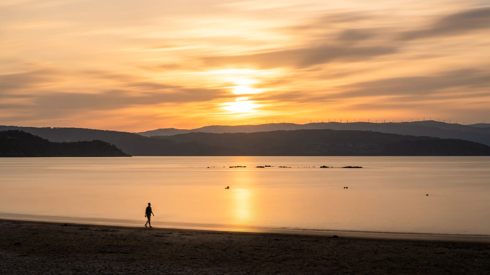
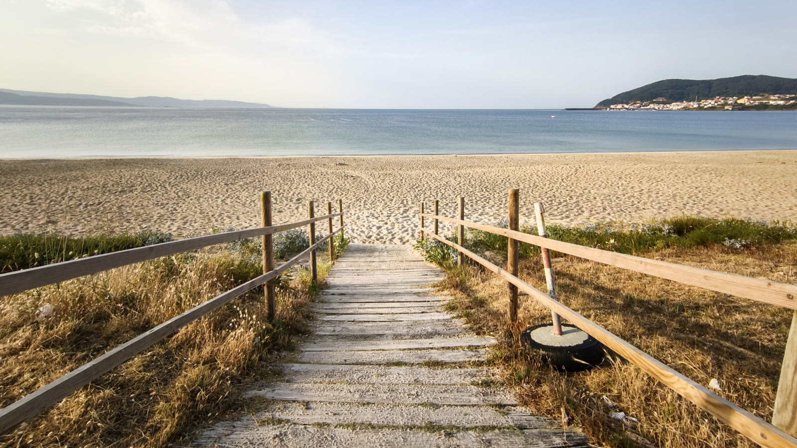
一轉身，竟然在路邊發現了熟悉的台灣貼紙，台灣人的足跡真的無處不在！就在這一刻，金黃陽光正好傾瀉而下，把整座海灣照得像一面黃金鏡子，一艘帆船靜靜滑過海面。這場清晨的迷路，遇見意想不到的日出與驚喜。

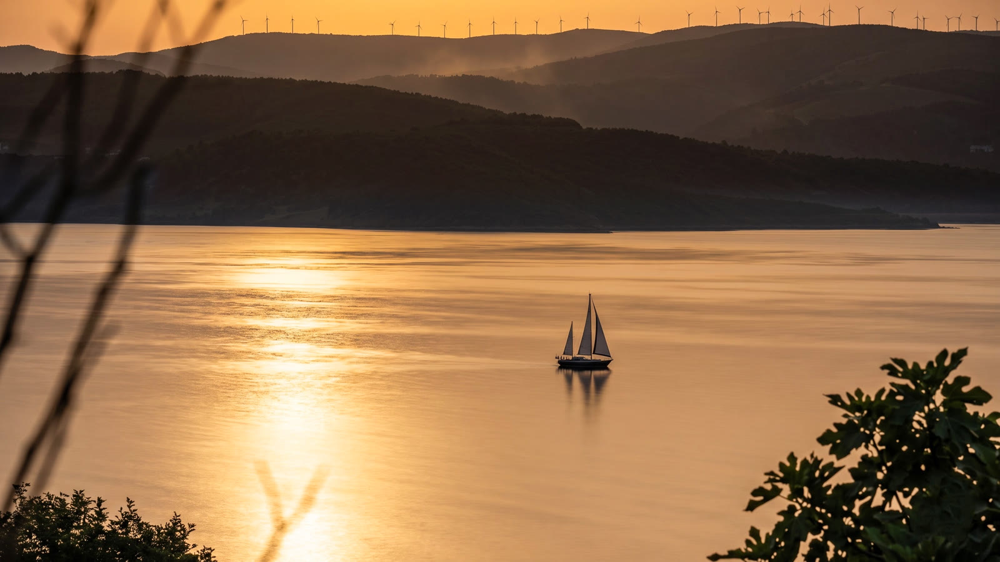
看著清晨這片超美的黃金海岸線，心情真的好到不行！原本朝聖之路的黃色箭頭是從這裡直接橫穿陸地、翻過山頭走向另一端的 Muxía。但我想說：都最後一天了，看海多浪漫啊！於是打開 Google 地圖，果斷放棄官方指標，決定走一條沿著海邊的路線。
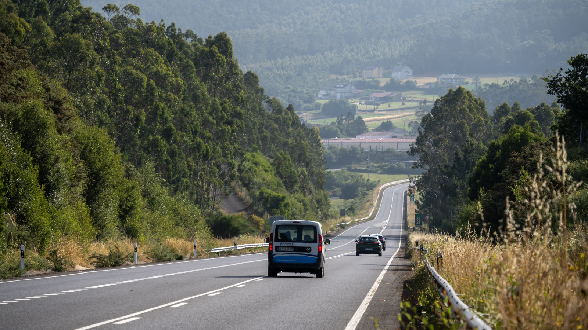
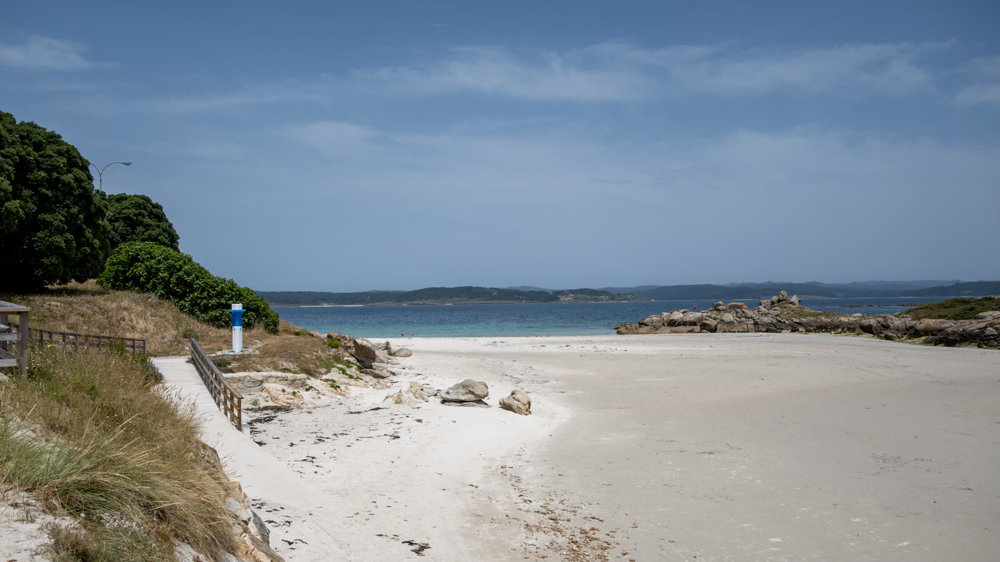
一開始還覺得自己選對了，一路重溫昨天超美的沙灘和 Fisterra 地標。沒想到海岸線走完，跟著導航切進內陸後，畫風瞬間突變！沿途的車子不斷按喇叭示警，每一聲都讓人心驚膽跳——這時才意識到，跟著 Google 走路模式，走上了一條車速超快的公路！但已經走了十幾公里，回頭太遠、往前又沒別條路，只能低下頭拼命往前趕路。
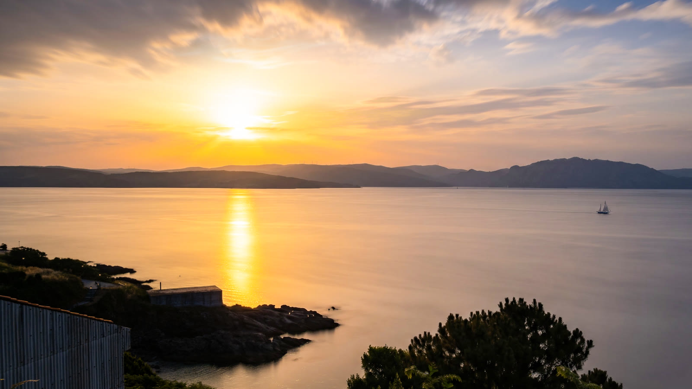
更崩潰的是，水壺裡的水早就喝光了。整整 16 公里的公路，前不著村後不著店，沒有 Bar、沒有水源、沒有半點遮蔽。乾裂的嘴唇，頂著烈日，看著無止盡的馬路，真的懷疑會不會熱中暑在公路上。
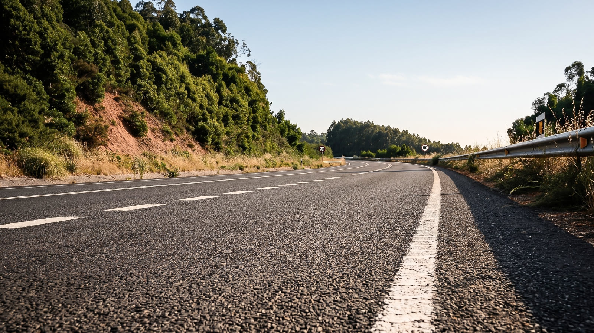
撐過漫長的公路煎熬，終於穿過馬路找到一間小超市——那一刻，整個人才真正放鬆下來。再次踏上一個人的徒步，當熟悉的黃色貝殼符號再次出現在路口，我知道，我終於切回正確的朝聖之路了。以前每天看習慣的黃色箭頭，在經歷迷失與恐懼後重逢，才發現這份指引有多麼讓人安心。沒想到走了三十幾天，最讓我刻骨銘心的，竟然是最後這一天！
到了 Muxía 小鎮，看著導航顯示庇護所就在主幹道的斜坡上方，總覺得直線距離最快。結果直接把自己搞進了荒涼的雜草堆裡——一路披荊斬棘，被帶刺的雜草在腳上畫出好幾道傷痕，狼狽得像在荒野求生。頭頂的海鷗此起彼落，聽起來簡直就像在嘲笑我的愚蠢。
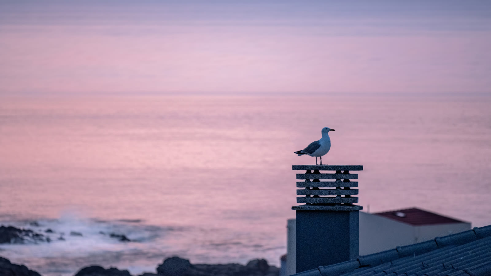
終於來到今晚落腳的庇護所，竟然像是一間充滿現代感的設計美術館！回想這最後一天，真的像一場精心安排、卻又完全失控的冒險：從清晨令人陶醉的海岸線，到誤闖公路的驚魂時刻，最後還有海鷗送來的無情嘲笑。
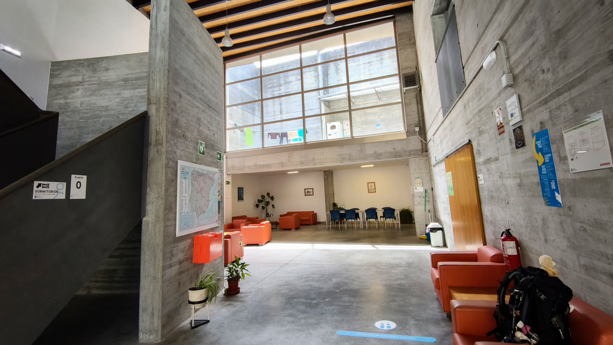
直到洗去一身風塵，走進小鎮圖書館，領取這張 Muxía 的官方證書。從最初在法國的第一步，到現在站在世界盡頭，一千多公里的路，真的走到了。這張證書不只是旅程的紀念，更是提醒自己——我真的做到了。
結束了這場充滿意外的冒險，點份朝聖者海鮮大餐與 Sangria，好好犒賞自己！入夜前走上屋頂，看著粉紅色的夕陽餘暉，一整天的波折，都化作了此刻的平靜。
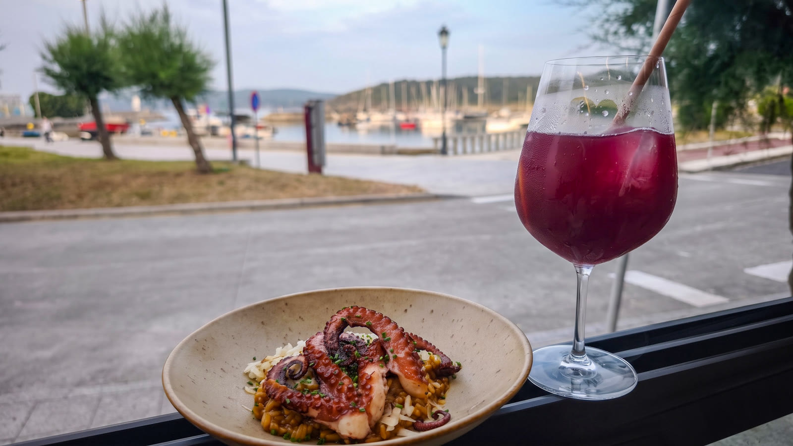
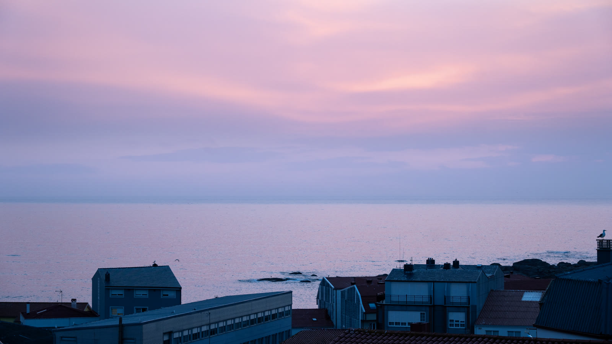
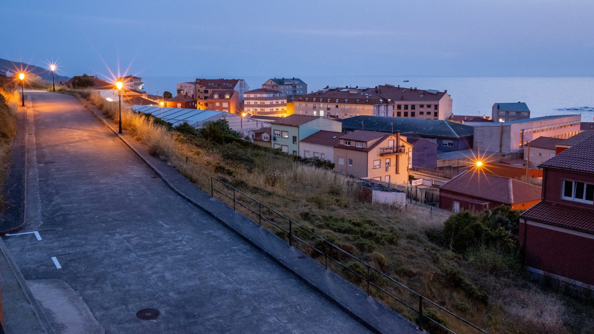
📚 朝聖者小百科：Muxía 的重生
穆希亞（Muxía）與 Fisterra 都有各自的 0km 石碑與抵達證書，多數人兩個都走。Fisterra 象徵「死亡」——在日落中告別；Muxía 象徵「重生」——在日出中迎接。走完兩端，才算走完完整的世界盡頭。
Muxía 證書（Muxiana）在小鎮圖書館領取，憑朝聖護照即可。傍晚別忘了走上海邊礁石區，看聖母石船教堂與傳說中的船帆石。
🗺️ 跟著黃色箭頭走！Google 走路模式可能把你帶上車流公路
💧 長距離路段水壺裝滿再出發，無遮蔽路段比想像中煎熬
| Bus 票 | €6.8 |
| 超商：火腿、優格、啤酒 | €4.0 |
| 住宿 | €26.0 |
| 紀念品：四格小掛件 | €3.5 |
| 晚餐：網紅餐廳分攤 | €28.0 |
| 家樂福：啤酒、飲料 | €3.0 |
| 郵票 | €21.6 |
| 合計 | €93.1 |
🎬 對應 Vlog EP9｜完結篇：爸，我做到了！徒步1000公里抵達終點Muxía 0KM、馬德里巡禮